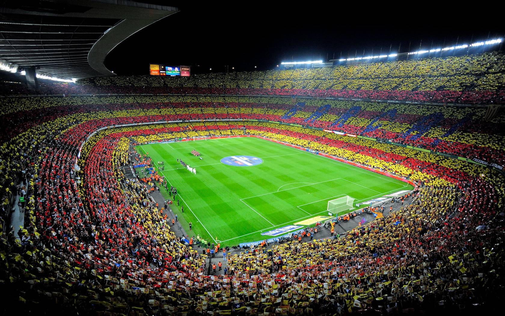

Stadium Information
Spotify Camp Nou is the largest stadium in Europe, with a seating capacity of nearly 100,000. It has hosted historic matches, legendary players, and unforgettable moments.
- 🛑 Location: Carrer d'Arístides Maillol, 12, 08028 Barcelona, Spain
- 📅 Opened: 1957
- ⚽ Home Team: FC Barcelona
- 🏟️ Seating Capacity: 99,354
Stadium Picture
